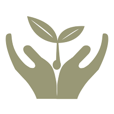

<!--
  Generated template for the InitialPage page.

  See http://ionicframework.com/docs/components/#navigation for more info on
  Ionic pages and navigation.
-->
<ion-header>

  <ion-navbar>
    <ion-title></ion-title>
  </ion-navbar>

</ion-header>
<ion-content class="bgInitPage">
      <!-- <ion-card class="list card animated bounceInLeft">
      <h2 class="text-white">قال تعالى</h2>
      <h1 class="text-white">" فمن تطوع خيراً فهو خير له "</h1>
      <h3 class="text-white">- صدق اللّه العظيم -</h3>
    </ion-card>
        <ion-card class="list card animated bounceInRight">
      <h1>لا قيمة لعطائك ان لم يكن جزءا من ذاتك</h1>
    </ion-card>
      <ion-card class="list card animated bounceInLeft">
      <h1 class="text-white"> يصبح الانسان عظيما تماما بالقدر الذي يعمل فيه من أجل رعاية أخيه الانسان </h1>
        <h3 class="text-white">- غاندي -</h3>
      </ion-card> -->
      <div class="Above">
        
      </div>
      <div class="mid"></div>
      <div class="Under">
        <p>تطبيق انا انسان!</p>
        <p>لا قيمة لعطائك ان لم يكن جزءا من ذاتك</p>
        <!-- <div class="mid"> -->
                
                <p style=" color:#ff9f3c;
                font-size: 15px;" class="animated bounceInLeft">ابدأ من هنا لتنير حياة من يحتاج الى المساعدة
                
              </p>
              <ion-icon ios="ios-bulb-outline" md="ios-bulb-outline" (click)="start()" class="light animated bounceInRight">
                    
                </ion-icon>
                
        
                <button (click)="openAddPage()">
                    <ion-icon name="add"></ion-icon>
                  </button>
        <!-- </div> -->
      </div>
      
      
      
</ion-content>

